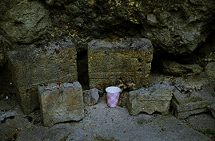
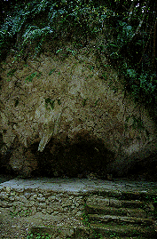
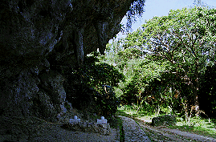
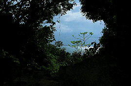
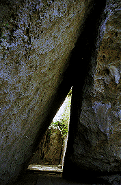

斎場御獄/沖縄県知念村
琉球七御獄のひとつ、首里王朝最高の聖地。斎場御獄。
特に珍寺な訳ではなくて恐縮だが、異様にスピリチュアルな雰囲気がビンビン来る場所なので敢えて紹介してみました。
場所としては本島南部の知念村。近くには知念海洋レジャーセンターなどがあり、おちゃらけたムードもあるが、ここに一歩足を踏み入れるとその雰囲気は一転する。
熱帯性の植物に覆われるような色の濃い森の中には巨大な岩山があり、その袂の岩屋には拝所が設けられている。
拝所には香炉と火を燃やした跡、紙コップなどがあり、飾り物の遺跡とは一線を画している。

東側には巨岩が寄り掛かった状態の三角形のトンネルがあり、そこを潜ると小さな拝所がある。
左を見れば木々の間から海が見え、その先には琉球の国創り伝説の地、「神の島」とも呼ばれる久高島が正面に横たわる。
あまりにも出来過ぎな空間演出に、改めて琉球最高の聖地という位置付けに納得する。


とにかく荘厳である。
沖縄といえばビーチリゾートであり、とかく「めんそーれ」的な南国風情をイメージしがちだが、ここにはそんな「のほほ〜ん」とした雰囲気はなく、むしろ他所者を跳ね返す位の拒絶感さえ感じられる。
それはもちろん琉球の歴史に疎い私のせいなのだが。
しつこいようだが、ここには珍なるものなどないので、行ってみて「大仏とかねえじゃんかよお」とかいわないように。
大仏を見たければ糸満市の平和記念堂に行けば良い。ただしそこも珍寺とは程遠い真面目なところだが。
たまには超高純度の聖域というものを堪能するのもまたよし。
2000.2
珍寺大道場 HOME